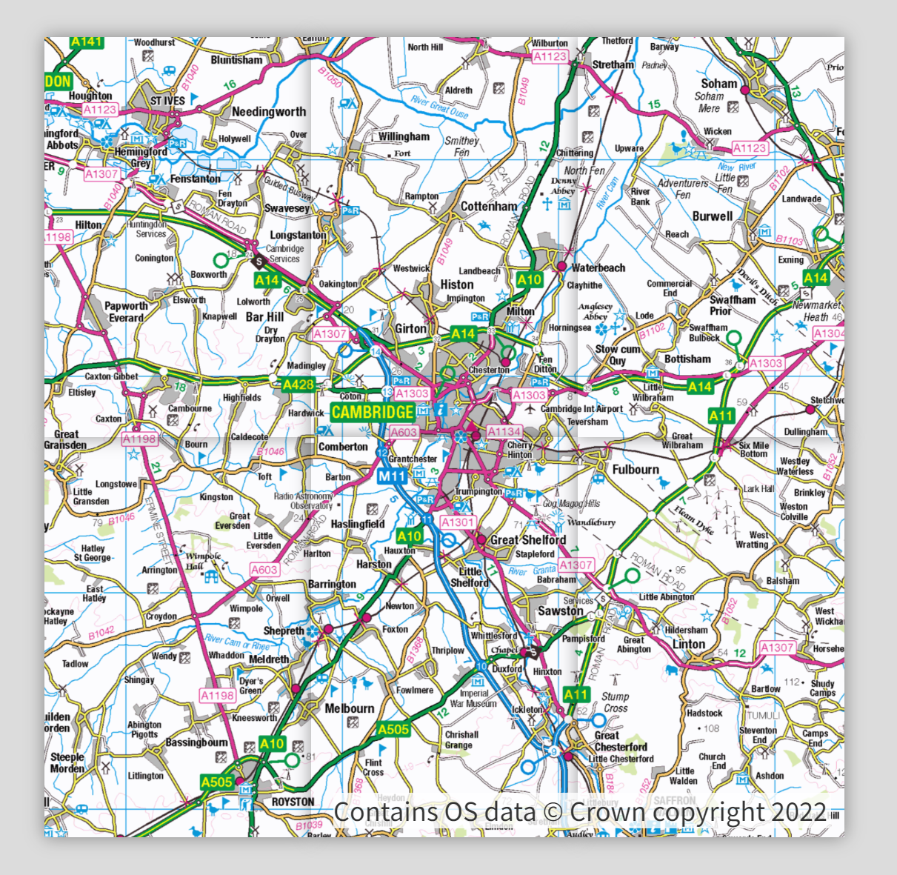
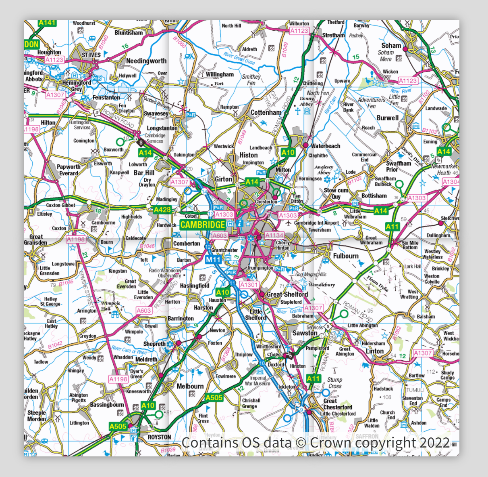

Mini Map
Hover over the map in the bottom left-hand corner of the screen to see the OS mini map unfolding!
You can add your own mini-map by copying the code in this repo and downloading the 250k raster map from the OS Data Hub Downloads API (also check out the osdatahub downloads wrapper if you're comfortable using Python!).
 arrow_forward

arrow_forward
